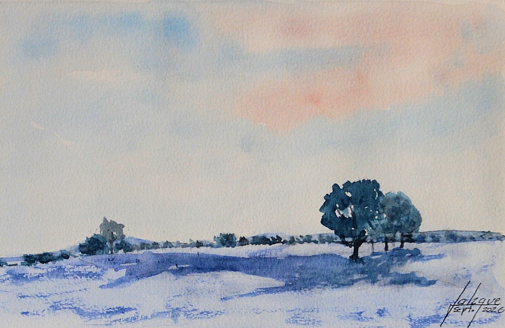

Quién soy
Soy Jaime Izquierdo y disfruto explorando las posibilidades de la acuarela. A través de mis pinturas comparto mi manera de observar e interpretar paisajes, escenas y pequeños detalles que despiertan mi interés.

Paisajes imaginarios, marinas, rincones de Donostia, bodegones, flores y figuras forman parte de un recorrido personal por el mundo de la acuarela. Cada pintura es una oportunidad para descubrir nuevos colores, luces y atmósferas, dejando que el agua y los pigmentos expresen aquello que a veces las palabras no alcanzan a contar.
En estas páginas comparto mis acuarelas, mis exposiciones y también aquellas obras de otros artistas que me inspiran.
Soy Jaime Izquierdo y disfruto explorando las posibilidades de la acuarela. A través de mis pinturas comparto mi manera de observar e interpretar paisajes, escenas y pequeños detalles que despiertan mi interés.
La acuarela es una técnica pictórica en la que los pigmentos se diluyen en agua y se aplican generalmente sobre papel. Su transparencia, luminosidad y libertad para mezclar colores hacen que cada pincelada tenga algo de espontáneo e irrepetible.
La acuarela se presenta en pastillas, tubos, formatos líquidos y pigmentos en polvo. Cada presentación ofrece posibilidades distintas para trabajar la intensidad, las transparencias y las texturas.
El agua, el papel y el pigmento ofrecen numerosas posibilidades expresivas. Desde los lavados suaves hasta las texturas más sorprendentes, cada técnica permite descubrir una nueva manera de pintar.
Practico los lavados sobre papel seco y húmedo, el húmedo sobre húmedo, las acuarelas en capas, el pincel seco, las flores, el emplumado, el difuminado, el punteado, las salpicaduras y el uso de esponja.
También he comenzado a experimentar con acuarela en polvo sobre papel muy húmedo y con espátula. Estas dos últimas técnicas surgieron de mi curiosidad: probando y jugando con los materiales para descubrir nuevos resultados.
16 técnicas de acuarela que debes probar — Jessie Oleson Moore.
Ocho espacios para recorrer mis acuarelas.
Todavía no hay imágenes en esta carpeta.
Todavía no hay imágenes en esta carpeta.
Todavía no hay imágenes en esta carpeta.
Todavía no hay imágenes en esta carpeta.
Todavía no hay imágenes en esta carpeta.
Todavía no hay imágenes en esta carpeta.
Todavía no hay imágenes en esta carpeta.
Todavía no hay imágenes en esta carpeta.
.JPG)